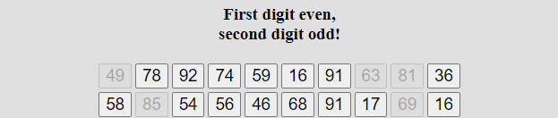

In the following test you will see 100 numbers.
Your task is to
click as quickly as possible, but still correctly
on the numbers (with the left mouse button) one after the other,
whose first digit is even and whose second digit is odd
(e.g. 25, 67, 83 etc.).
Example
Below you can see a section of the first 20 numbers:

The numbers marked here are correct.
You should only go through the numbers once quickly without jumping back
und
and answer as quickly as possible, but still correctly.
At the end, click on the "Confirm processing" / "Bestätigen" button immediately!
There will then be a second round, which you should complete in the same way.
First a test example with 16 numbers